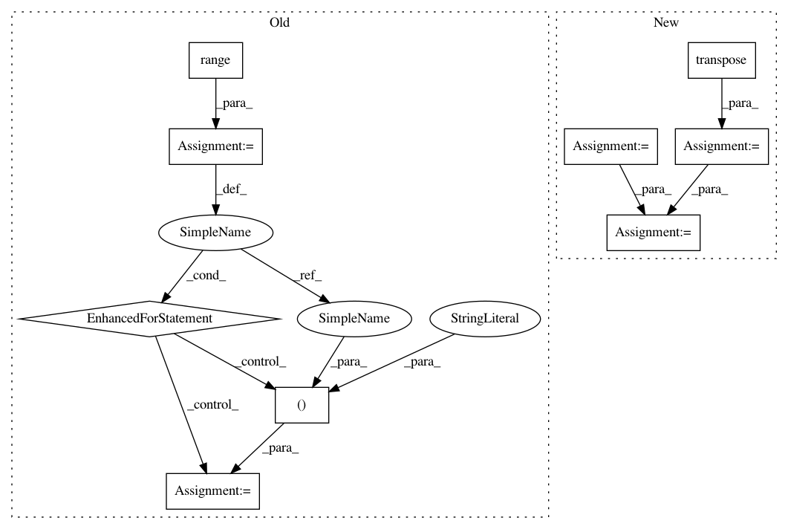

b3dab0288ddcd165e2ba6f95061b5f3d7bf82a1a,GPflow/vgp.py,VGP,build_predict,#VGP#Any#Any#,122
Before Change
// predictive var
f_var = []
for d in range(self.num_latent):
b = self.q_lambda[:, d]
A = K + tf.diag(1./tf.square(b))
L = tf.cholesky(A)
LiKx = tf.matrix_triangular_solve(L, tf.transpose(Kx), lower=True)
if full_cov:
f_var.append(self.kern.K(Xnew) -
tf.matmul(tf.transpose(LiKx), LiKx))
else:
f_var.append(self.kern.Kdiag(Xnew) -
tf.reduce_sum(tf.square(LiKx), 0))
f_var = tf.pack(f_var)
return f_mean, tf.transpose(f_var)
After Change
f_mean = tf.matmul(tf.transpose(Kx), self.q_alpha) + self.mean_function(Xnew)
// predictive var
A = K + tf.batch_matrix_diag(tf.transpose(1./tf.square(self.q_lambda)))
L = tf.batch_cholesky(A)
Kx_tiled = tf.tile(tf.expand_dims(Kx, 0), [self.num_latent, 1, 1])
LiKx = tf.batch_matrix_triangular_solve(L, Kx_tiled)
if full_cov:
f_var = self.kern.K(Xnew) - tf.batch_matmul(LiKx, LiKx, adj_x=True)
else:
f_var = self.kern.Kdiag(Xnew) - tf.reduce_sum(tf.square(LiKx), 1)
return f_mean, tf.transpose(f_var)
In pattern: SUPERPATTERN
Frequency: 3
Non-data size: 9
Instances
Project Name: GPflow/GPflow
Commit Name: b3dab0288ddcd165e2ba6f95061b5f3d7bf82a1a
Time: 2016-08-10
Author: james.hensman@gmail.com
File Name: GPflow/vgp.py
Class Name: VGP
Method Name: build_predict
Project Name: utkuozbulak/pytorch-cnn-visualizations
Commit Name: 3df2eaf74d8f2299ca05e3e98cab5bf89dafc249
Time: 2017-10-24
Author: utku.ozbulak@gmail.com
File Name: cnn_visualisation.py
Class Name:
Method Name: preprocess_image
Project Name: rtavenar/tslearn
Commit Name: 7ea8c3e6d162ef47fbcfcb6621ff7633d91ae61d
Time: 2020-04-16
Author: francois-33
File Name: tslearn/early_classification.py
Class Name: NonMyopicEarlyClassification
Method Name: _expected_cost
Project Name: GPflow/GPflow
Commit Name: b3dab0288ddcd165e2ba6f95061b5f3d7bf82a1a
Time: 2016-08-10
Author: james.hensman@gmail.com
File Name: GPflow/vgp.py
Class Name: VGP
Method Name: build_predict